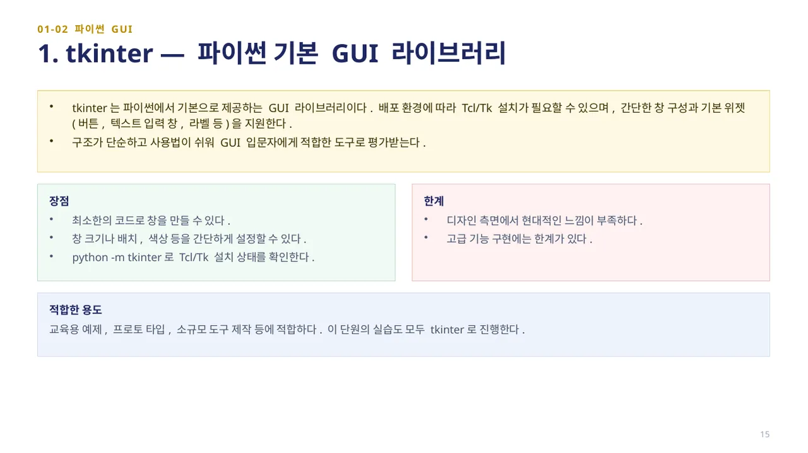
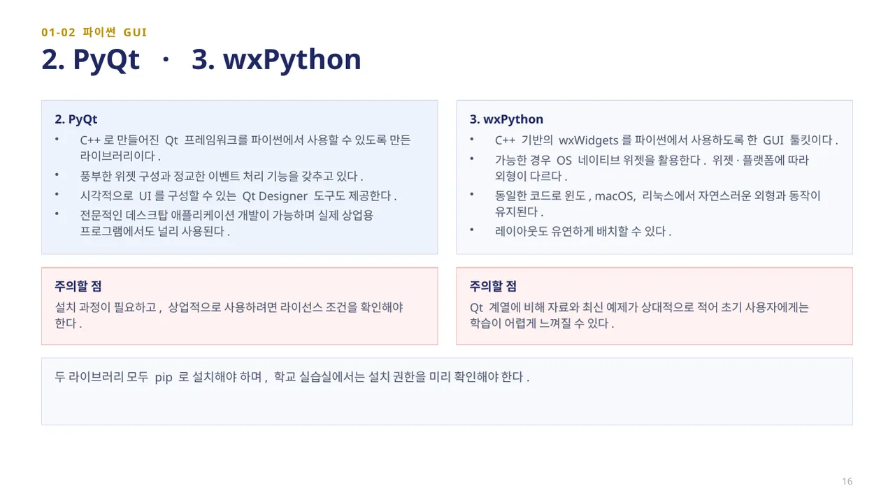
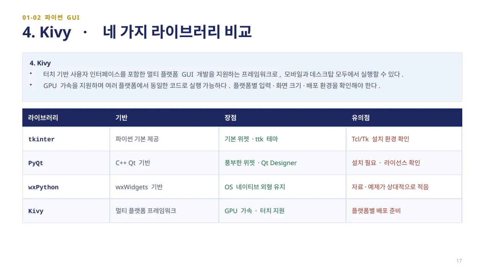
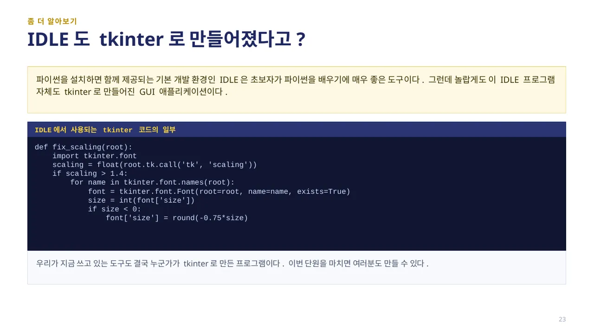

GUI 프로그래밍은 버튼 클릭, 텍스트 입력, 드래그 같은 그래픽 위젯을 통해 사용자와 프로그램이 상호 작용하도록 만드는 방식입니다. 파이썬에서 활용할 수 있는 대표적인 GUI 라이브러리 네 가지를 살펴봅니다.

tkinter는 파이썬에서 기본으로 제공하는 GUI 라이브러리입니다. 별도의 설치 없이 사용할 수 있으며, 간단한 창 구성과 기본 위젯(버튼, 텍스트 입력 창, 라벨 등)을 지원합니다. 구조가 단순하고 사용법이 쉬워 GUI 입문자에게 적합한 도구로 평가받습니다.
tkinter를 사용하면 최소한의 코드로 창을 만들 수 있으며, 창 크기나 배치, 색상 등을 간단하게 설정할 수 있습니다. 하지만 디자인 측면에서는 현대적인 느낌이 부족하며, 고급 기능 구현에는 한계가 있습니다. 교육용 예제, 프로토타입, 소규모 도구 제작 등에 적합합니다. 이 단원의 실습은 모두 tkinter로 진행합니다.

PyQt는 C++로 만들어진 Qt 프레임워크를 파이썬에서 사용할 수 있도록 만든 라이브러리입니다. 풍부한 위젯 구성과 정교한 이벤트 처리 기능을 갖추고 있으며, 실제 상업용 프로그램에서도 널리 사용됩니다. 단, 설치 과정이 필요하고 상업적으로 사용하려면 라이선스 조건을 확인해야 합니다.
wxPython은 C++ 기반의 wxWidgets를 파이썬에서 사용하도록 한 GUI 툴킷입니다. 가장 큰 특징은 각 운영체제의 네이티브 위젯을 활용해 플랫폼 고유의 인터페이스가 그대로 구현된다는 점입니다. 다만 Qt 계열에 비해 자료와 최신 예제가 상대적으로 적습니다.

Kivy는 터치 기반 사용자 인터페이스를 포함한 멀티 플랫폼 GUI 개발을 지원하는 프레임워크입니다. 모바일과 데스크탑 모두에서 실행할 수 있으며, 게임이나 앱과 같은 동적인 인터페이스 구성에 적합합니다. GPU 가속을 지원하지만 학습 곡선이 높아 입문용보다는 고급 프로젝트에 알맞은 도구입니다.
네 라이브러리 중 어떤 것을 선택할지는 목적에 따라 달라집니다. 쉬운 입문·교육용에는 tkinter, 전문적인 데스크탑 앱에는 PyQt, 운영체제 고유 외형이 필요하면 wxPython, 터치·모바일·게임에는 Kivy가 적합합니다.

좀 더 알아보기(46쪽): IDLE도 tkinter로 만들어졌다고? 파이썬을 설치하면 함께 제공되는 기본 개발 환경인 IDLE은 초보자가 파이썬을 배우기에 매우 좋은 도구입니다. 그런데 놀랍게도 이 IDLE 프로그램 자체도 tkinter로 만들어진 GUI 애플리케이션입니다.
IDLE에서 사용되는 tkinter 코드의 일부입니다.
def fix_scaling(root):
import tkinter.font
scaling = float(root.tk.call('tk', 'scaling'))
if scaling > 1.4:
for name in tkinter.font.names(root):
font = tkinter.font.Font(root=root, name=name, exists=True)
size = int(font['size'])
if size < 0:
font['size'] = round(-0.75*size)
우리가 지금 쓰고 있는 도구도 결국 누군가가 tkinter로 만든 프로그램입니다. 이번 단원을 마치면 여러분도 만들 수 있습니다.
 인공지능 파이썬 실무
인공지능 파이썬 실무